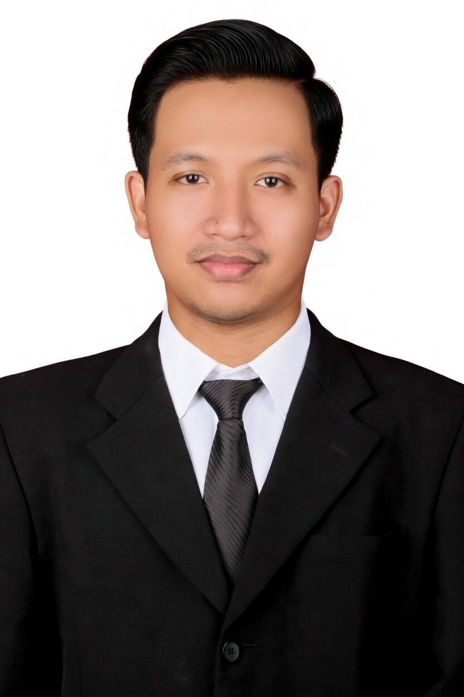

Production Engineer | Digital Innovation | FMCG Agribusiness
Connect on LinkedIn 🐙 GitHubElectrical Engineering graduate with proven experience in production system digitalization, equipment reliability, and maintenance engineering within FMCG agribusiness operations. Demonstrated impact in cost reduction exceeding IDR 1.2B/year, multi-site system deployment, and TPM implementation across multiple business units.
Strong in systems thinking, problem solving, and operational execution — with hands-on involvement from development and pilot through to full implementation. Highly driven to grow as a Production or Maintenance Engineer, with a focus on operational excellence and continuous improvement.
Operational Smart Machinery – Production System Implementation & Operational Execution
Internship – Digital Innovation
Intern – Energy Transaction (Kampus Merdeka)
💼 Work Projects
🐙 Personal Projects (GitHub)
| Technical | Production System Implementation, Sensor-Based Monitoring, PLC, PWM, PID Control, UAT, TPM |
| Tools & Software | Odoo, Python, VS Code, Google Colab, Canva, Figma, MS Office (Word, Excel, PowerPoint) |
| Soft Skills | Cross-Functional Collaboration, Problem Solving, Operational Execution, Performance Monitoring, User Training |
| Languages | Indonesian (Native) | English (Professional Working Proficiency) |
Bachelor's Degree in Electrical Engineering
Laboratory Assistant, Universitas Lampung
Pengabdian Masyarakat Division